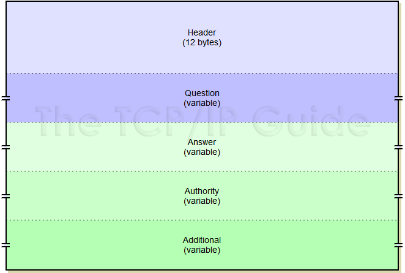
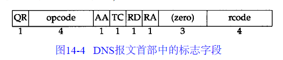
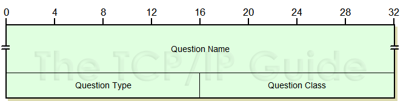
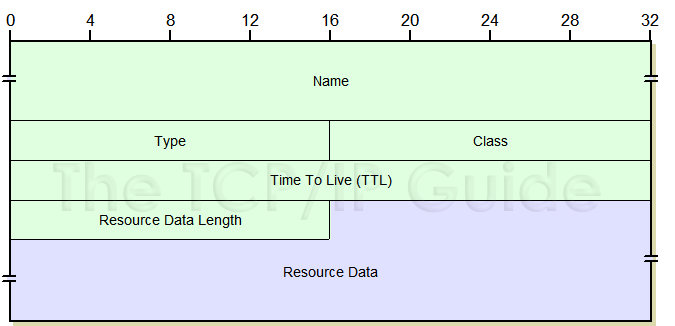
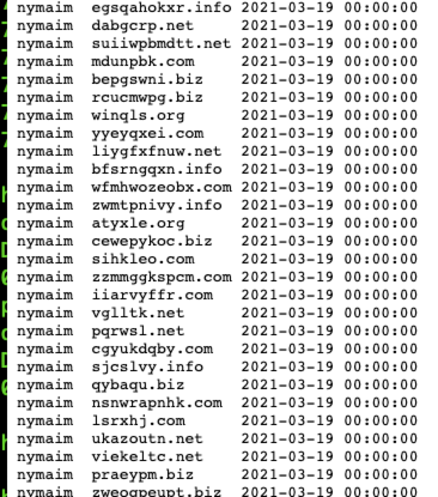

介绍
使用 cgroups + etcd + kafka 开发而成的hids的架构，agent 部分使用go 开发而成， 会把采集的数据写入到kafka里面，由后端的规则引擎（go开发而成）消费，配置部分以及agent存活使用etcd。关于agent 使用cgroups限制资源以及使用etcd做配置管理agent存活已经在前文介绍了一下。下面介绍一下agent抓取DNS请求和异常分析的部分。
DNS 响应报文格式介绍

DNS 请求的格式和响应格式差不多，DNS 定义了一个用于查询和响应的报文格式。上图显示这个报文的总体格式。这个报文由 12 字节长的首部和 4 个长度可变的字段组成。
DNS报文里的名字 说明
- Transaction ID 标识符。下文说明
- Flags 参数。下文说明
- Questions 询问列表的数目
- Answer RRs (直接) 的回答数
- Authority RRs 认证机构数目（仅响应包里有）
- Additional RRs 附加信息数目（仅响应包里有）
- Queries 请求数据的正文。请求包中只有这个。响应包也会附上原本的请求数据
- Answers 响应数据的正文
- Authortative name servers 域名管理机构数据
- Additional records 附加信息数据
DNS 报文 12 字节长的首部格式如下图所示。

标识字段由客户程序设置并由服务器返回结果。 客户程序通过它来确定响应与查询是否匹配。
16 bit 的标志字段被划分为若干子字段，如下图所示。

Transaction ID：这是由 client 端指定的标识数据，DNS server 会将这个字段原样返回，client 端可以用来区分不同的 DNS 请求 RR：Resource Record 的缩写
Flags
16 bits 的值，各部分按顺序如下（按顺序：位号、Ethereal 名称、说明）：
Bit 15，QR(Query/Response Flag) ：0 表示查询，1 表示响应（query / response）
Bit 14~11, Opcode：查询类型——请求和响应包都适用：
0：普通查询（最常用的）
1：反向查询
2：服务器状态请求
3：通知
4：更新
Bit 10, Authoritative： AA 用于响应包，判断服务器是否一个认证的域服务器。
Bit 9, Truncated： TC表示 “可截断的(Truncated)”。使用 UDP 时，它表示当应答的总长度超过 512 字节时，只返回前 512 个字节。
Bit 8, Recursion desired：收发包都用，表示是否需要用递归。作为 client 端，最好置 1，要不然 DNS 不执行递归查询，将有很多数据没能查到。该比特能在一个查询中设置，并在响应中返回。 这个标志告诉名字服务器必须处理这个查询，也称为一个递归查询。 如果该位为 0，且被请求的名字服务器没有一个授权回答，它就返回一个能解答该查询的其他名字服务器列表，这称为迭代查询。
Bit 7, Recursion available：响应包用，表示 “可用递归(Recursion Available)”。 如果名字服务器支持递归查询，则在响应中将该比特设置为 1。 在后面的例子中可看到大多数名字服务器都提供递归查询，除了某些根服务器。
Bit 6， 0
Bit 5, 0
Bit 4, 0
Bit 3~0, Reply code：响应状态码，是一个 4 bit 的返回码字段。通常的值为 0（没有差错）和 3（名字差错）。 名字差错只能从一个授权名字服务器上返回，它表示在查询中指定的域名不存在。 下面列出rcode
0：OK
1：查询格式错误
2：服务器内部错误
3：名字不存在
4：这个错误码不支持
5：请求被拒绝
6：name 在不应当出现时出现
7：RR 设置不存在
8：RR 设置应当存在但是却不存在
9：服务器不具备改管理区的权限
10：name 不在管理区中
随后的 4 个 16 bit 字段说明最后 4 个变长字段中包含的条目数。 对于查询报文，问题(question)数通常是 1，而其他 3 项则均为 0。 类似地，对于应答报文，回答数至少是 1，剩下的两项可以是 0 或非 0。
DNS 查询报文中的问题部分
问题部分中每个问题的格式，通常只有一个问题。

查询名(Name)是要查找的名字，它是一个或多个标识符的序列。 每个标识符以首字节的计数值来说明随后标识符的字节长度， 每个名字以最后字节为 0 结束，长度为 0 的标识符是根标识符。 计数字节的值必须是 0 ~ 63 的数，因为标识符的最大长度仅为 63 （我们会看到计数字节的最高两比特为 1，即值 192 ~ 255，将用于压缩格式）。 不像我们已经看到的许多其他报文格式，该字段无需以整 32 bit 边界结束，即无需填充字节。
每个问题有一个查询类型(Type)，而每个响应（也称一个资源记录，我们下面将谈到）也有一个类型。 大约有 20 个不同的类型值，其中的一些目前已经过时。 下面列出：
1 A 由域名获得IPv4地址
2 NS 查询域名服务器
5 CNAME 查询规范名称
6 SOA 开始授权
11 WKS 熟知服务
12 PTR 把IP地址转换成域名
13 HINFO 主机信息
15 MX 邮件交换
28 AAAA 由域名获得IPv6地址
252 AXFR 传送整个区的请求
255 ANY 对所有记录的请求
最常用的查询类型是 A 类型，表示期望获得查询名的 IP 地址。 一个 PTR 查询则请求获得一个 IP 地址对应的域名。查询类(Class)通常是 1，指互联网地址（某些站点也支持其他非 IP 地址）。
DNS 响应报文中的资源记录部分

DNS 报文中最后的三个字段，回答字段、授权字段和附加信息字段， 均采用一种称为资源记录RR（Resource Record）的相同格式。 图显示了资源记录的格式。
- Ethereal 里的名字 说明
- Name 资源的域名
- Type 类型。下文说明
- Class 大多数是 0x0001，代表 IN
- Time to Live TTL 秒数
- Data length 当前 RR 剩余部分的长度
- variable RR 主数据
域名是记录中资源数据对应的名字。它的格式和前面介绍的查询名字段格式相同。
类型说明 RR 的类型码。它的值和前面介绍的查询类型值是一样的。类通常为 1，指 Internet 数据。
生存时间字段是客户程序保留该资源记录的秒数。资源记录通常的生存时间值为 2 天。
资源数据长度说明资源数据的数量。该数据的格式依赖于类型字段的值。对于类型 1（A 记录）资源数据是 4 字节的 IP 地址。
实例代码
抓取dns记录，可以hook udp_recvmsg() udpv6_recvmsg() 函数，也可能直接用libpcap。libpcap的工作原理可以描述为，当一个数据包到达网卡时，通过网络分接口（即旁路机制）将数据包发给BPF过滤器，匹配通过的数据包可以被libpcap利用创建的套接字PF_PACKET从链路层驱动程序中获得。进而在用户空间提供独立于系统的用户级API接口。我们使用谷歌的包github.com/google/gopacket， gopacket构建在libpcap之上。配合 audit 或者hook 相关函数，可以清楚看到对应的uid pid。
样例：
import (
"fmt"
"log"
"errors"
"github.com/google/gopacket"
"github.com/google/gopacket/layers"
"github.com/google/gopacket/pcap"
)
var (
SrcIP string
DstIP string
)
func getDnsPcapHandle(ip string) (*pcap.Handle, error) {
devs, err := pcap.FindAllDevs()
if err != nil {
return nil, err
}
var device string
for _, dev := range devs {
for _, v := range dev.Addresses {
if v.IP.String() == ip {
device = dev.Name
break
}
}
}
if device == "" {
return nil, errors.New("find device error")
}
h, err := pcap.OpenLive(device, 65535, true, pcap.BlockForever)
if err != nil {
return nil, err
}
log.Println("StartDnSMonitor")
err = h.SetBPFFilter("udp and port 53")
if err != nil {
return nil, err
}
return h, nil
}
func StartDNSNetSniff(resultChan chan map[string]string) {
var eth layers.Ethernet
var ip4 layers.IPv4
var udp layers.UDP
var dns layers.DNS
var payload gopacket.Payload
var resultdata =make(map[string]string)
h, err := getDnsPcapHandle("10.10.16.1")
if err != nil {
fmt.Println("get pcaphandle failed, err:", err)
return
}
parser := gopacket.NewDecodingLayerParser(layers.LayerTypeEthernet, ð, &ip4,&udp, &dns, &payload)
decodedLayers := make([]gopacket.LayerType, 0, 10)
for {
data, _, err := h.ReadPacketData()
if err != nil {
fmt.Println("Error reading packet data: ", err)
continue
}
err = parser.DecodeLayers(data, &decodedLayers)
for _, typ := range decodedLayers {
switch typ {
case layers.LayerTypeIPv4:
SrcIP = ip4.SrcIP.String()
DstIP = ip4.DstIP.String()
case layers.LayerTypeDNS:
if !dns.QR {
for _, dnsQuestion := range dns.Questions {
resultdata["source"] = "dns"
resultdata["src"] = SrcIP
resultdata["dst"] = DstIP
resultdata["domain"] = string(dnsQuestion.Name)
resultdata["type"] = dnsQuestion.Type.String()
resultdata["class"] = dnsQuestion.Class.String()
resultChan <- resultdata
}
}
}
}
}
}
上面给出了一个抓取dns请求的样例，比如，看下面这个DNS隧道：


特征很明显：
1， 请求的Type一般都是TXT（为了返回的时候能够加入更多的信息）。】
2， payload部分一般都会编码（可能为base64、2进制或16进制）后放到子域名里面，而且多变，不一致
3， DNS发生频率很高，短时间为了发送大量数据，会产生大量请求
我们也可以联动威胁情报

在server 端做流式分析，挖掘 C2 、APT、 botnet 等等。